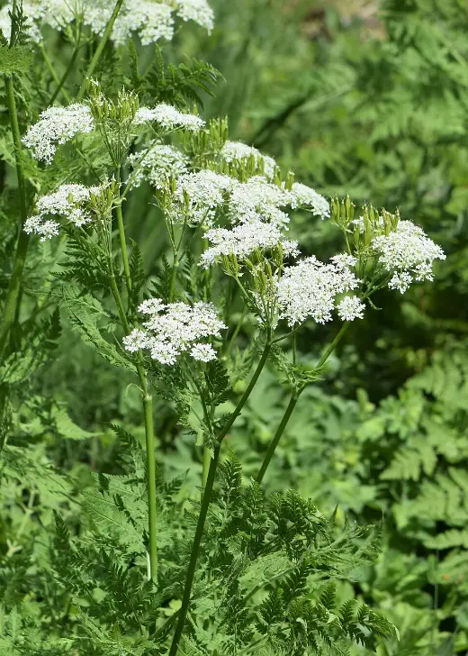

Sweet cicely
Sweet cicely is a wild green you can forage from April to July in South and the Alps. Soft, fern-like leaves flecked with white and smelling strongly of aniseed; white umbels and long ridged seeds. Common in northern England, Scotland and the Alps.

When is sweet cicely in season in Germany?
Sweet cicely is usually in season April to July. Timing shifts with weather, latitude and altitude.
Where does sweet cicely grow in Germany?
Sweet cicely grows in Baden-Württemberg, Bavaria. Regions: South and the Alps.
How do you recognise sweet cicely?
Soft, fern-like leaves flecked with white and smelling strongly of aniseed; white umbels and long ridged seeds. Common in northern England, Scotland and the Alps.
How do you harvest sweet cicely?
Pinch off young tips and top leaves before the plant flowers, when they are tender and mild. Leave the roots and lower leaves so it regrows. Pick away from roads, sprayed verges and dog-walking paths.
How do you eat sweet cicely?
Leaves and green seeds sweeten rhubarb and gooseberries; leaves in salads.
How do you store sweet cicely?
Best fresh; freeze leaves.
What can be confused with sweet cicely?
Hemlock (Conium maculatum), rated deadly. Elder is a woody shrub; hemlock is a soft plant with hollow stems. Hemlock stems are smooth with purple blotches and smell mousy. Ground elder has leaves in threes on a triangular, unspotted stem.
What is sweet cicely good for?
Vitamin C.